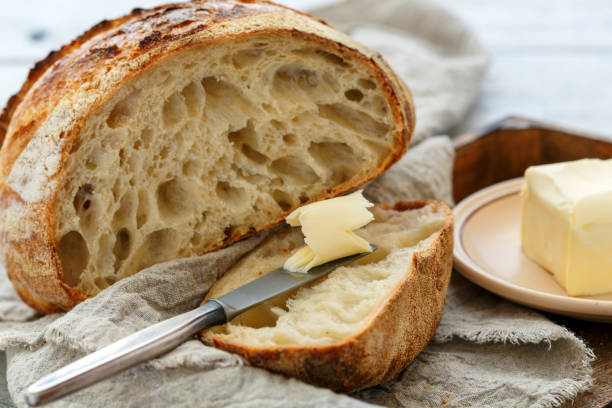

Sourdough Bread

The Bread!
This section is to prepare your sourdough starter, or levain, to make the full loaves of bread. Mix together
ingredients in a covered container and let ferment for 6 hours in oven with the oven light on. 30 minutes before
the levain is ready begin autolese of the rest of your dough.
Ingredients for Levain
- 45 grams - Sourdough starter
- 45 grams - Unbleached All-purpose Flour
- 45 grams - Whole Wheat Flour
- 90 grams - Room Temperature Distilled Water
Ingredients for Sourdough Bread
- 500 grams - All-purpose Flour
- 275 grams - Bread Flour
- 175 grams - Whole Wheat or Rye Flour
- 660 grams - Distilled Water at 90 - 95 degrees fahrenheit
- 18 grams - Sea Salt
Instructions for Sourdough Bread
- With 30 minutes remaining on levain, mix together the 500 grams all-purpose flour, 275 grams bread flour, 175 grams whole wheat or rye flour, and 660 grams of distilled water. Put in oven with levain for remaining time.
- Once time has elapsed, sprinkle 18 grams of sea salt onto the top of your dough and pour levain into dough bowl. Poke your fingers down into the levain and dough to begin mixing then mix thoroughly by folding the dough.
- Bulk ferment the mixed dough for 3 to 4 hours in the oven with the oven light on. Fold the dough 3 times during this time, once after the inital 15 minutes, then 15 minutes later and lastly 30 minutes after that.
- Let the dough rest in the oven for the remaining time.
- After the bulk ferment scoop the dough out onto a work surface and divide in half.
- Once seperated preshape into circles and immediatly cover with over turned bowls for 15 minutes, then remove bowls for another 10 minutes.
- Flip dough onto its top and do final shaping with folding and then flip back over to creat tight dough balls.
- Flour bannetons with rice flour to prevent sticking and put dough balls into bannetons.
- Place bannetons into air tight bags and put into fridge for 14 to 15 hours.
- Preheat oven at 500 degrees fahrenheit, place dutch oven or pizza stone into oven and preheat for one hour.
- You can score the top of the dough, with a knife, once flipped from the banneton or place dough right from fridge into dutch oven.
- Cook dough for 20 minutes covered at 500 degrees fahrenheit.
- After 20 minutes, turn oven down to 475 degrees fahrenheit and remove lid, leave for another 25 to 30 minutes.
- Remove bread and let cool on baking rack till room temperature.